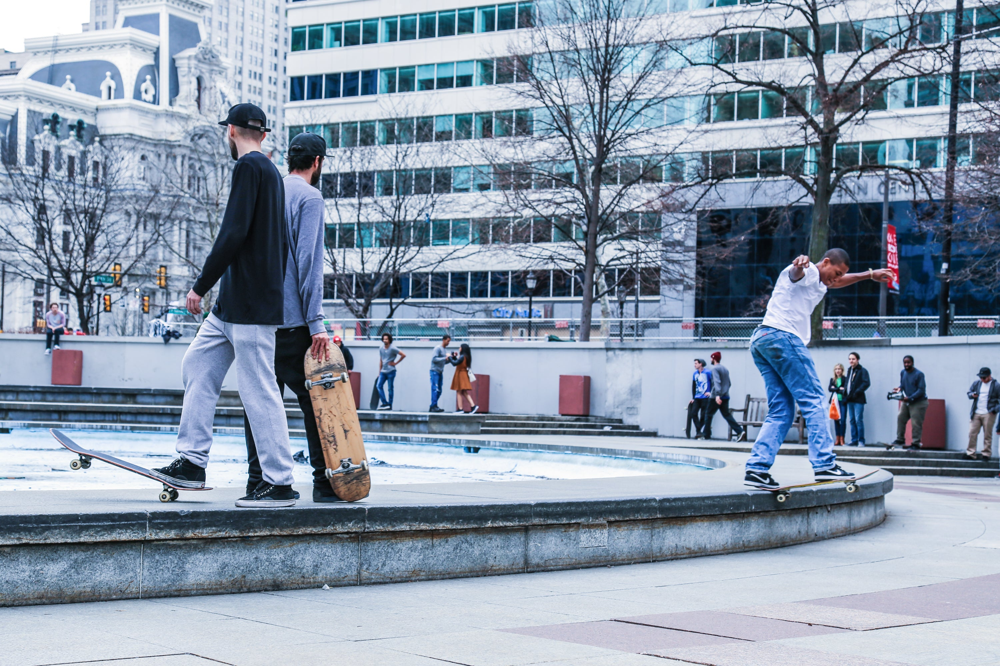

Although Philly skate culture has been heavily influenced by the urban landscape, the relationship between skateboarders and the city has historically been contentious. As the city's landscape and perception of skateboarding has shifted over the years, Philly skaters continue their tradition of making of it work.
The Heyday
The 1990s and early 2000s are considered the golden age of street skating in Philadelphia. The architectual plaza styles of City Hall, Love Park, and the Municipal building at the time were a centralized trifecta of perfect streetstyle skating ground. Made up of sunken plazas, staircases, pits, and ledges, the type of skating made possible would define a skate style unique to Philadelphia. Skateboard videos like the iconic Static series coming out of Philadelphia at the time led to the city becoming a global street skate destination. The X Games held their first skateboard street competition in Philadelphia in 2001 further cementing Philly's skate city status.
Click Here to WatchThe Trouble Years
The early 2000s to 2010s saw a significant pushback from the city. Skateboarders were labelled a nuisance and city officials actively worked to push skaters out of Center City as they worked to reinvent it. Skaters could now be fined steeply if they were caught. As City Hall and Love Park were redesigned in 2014 and 2016 to be less skateable, even the city planner, Ed Bacon, responsible for Love Park went to protest at the age of 92.
Click Here to WatchThe Modern Era
The 2010s to current day mark an era of skaters actively pushing back to reclaim skate spots around the city. FDR Park which is a DIY skatepark built by volunteers continues to grow and thrive. Paine's Park by the art museum was created by the Franklin Paine's Skatepark Fund in collaboration with the city to create a legal, dedicated skatepark to make up for the loss of Love Park. Parts of Love Park were also salvaged by Philly skaters during demolition and have been repurposed to build other skate spots both locally and around the world. One of the most prominent reuse of materials can be seen in the redesigned Thomas Paine Plaza that reopened in 2026 where Philly skaters worked with the mayor to create a designated skating location.
Click Here to Watch